In this lesson we are hoing to learn how to create a menu for our website.
1. We use an unordered list to do this.
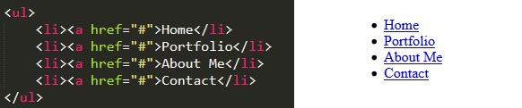2. But it looks ugly so we can create a style sheet to format the list.
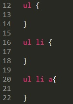3. We first remove the bullet point dots with list-style:none;
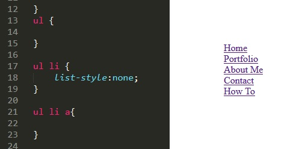4. At the moment we have some default padding nd margin around the list so we can modify the style sheet quikly to remove default styling. Note that we use zero without px or % because zero is the same as a percentage or as pixels.
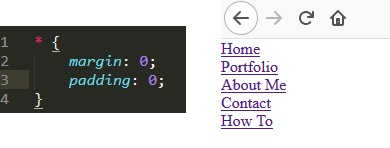5a. Next we want a horizontal menu rather than a vertical list. We medify the CSS code for the list items with display: inline-block.
5b. and we want to remove the underline for the anchored items with text-decoration: none.
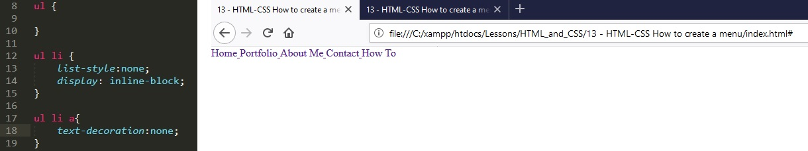6. Now if we zoom in we can see a small gap between the items of the menu that is not clickable. Next we want to get rod of that gap.

7. Next we are going to style the text within the menu.
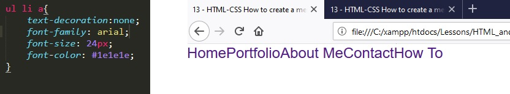8. Now we want to create some kind of box like a bar which we typically have on a website. We do this by adding Nav tags to the HTML and giving it style in CSS. We can also style the background with by giving the body CSS style.
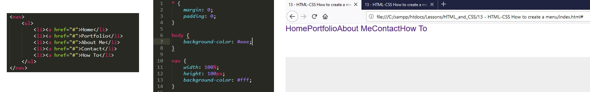9a. And centre the text vertically inside the NAV bar by setting the line-height to the same height as the Nav.
9b. We can also add spacing between our menu items by adding padding to the anchors.
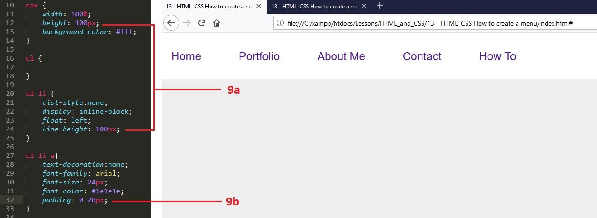9a. And centre the text vertically inside the NAV bar by setting the line-height to the same height as the Nav.
9b. We can also add spacing between our menu items by adding padding to the anchors.
10. At the moment we can only click of we hover over the text. But we would like to click it if the mouse is in the general area above or below of each menu item. We can change this by making the anchors dosplay as block.
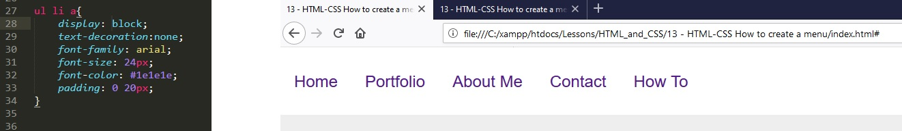11. When I hover over each menu item I want them to change colour so I create a hover action in the CSS code.
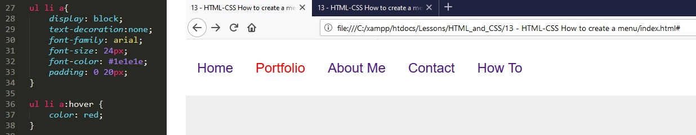12. lastly, we can indent the ul list with a margin-left: 120px to add space for a logo.
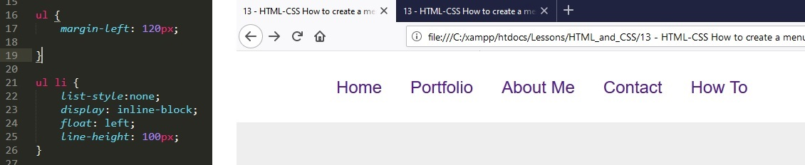